<!DOCTYPE html>
<html>
	<head>
		<title>Connor Quinn</title>
		<style>
			body{background-color: #430d5e; margin: 0 15%;}
			h1{text-align: center; color: #e5d0ef;}
			h2{color: #d0e0ef;}
			p{color: #e5d0ef;}	
	</head>
<body>
	<h1>
	<br>Duke Connor Quinn, of Longwood</h1>

	<h2><em>Well, Hello There!</em></h2>
	<p>Thanks so much for stopping by. Bathroom is down the hall and we have drinks in your fridge. But <strong>mostly</strong> we have a few fine words about the esteemed gentleman pictured above.</p>
	<br>Connor is a freelance animator, illustrator, and comedian with a long history of making folks laugh and a longer history of translating his creativity onto a page. He is a spectacular listener and a gifted speaker, making him an invaluable asset for helping you communicate your ideas and transform them into gorgeous finished product. A true pleasure with whom to parlay on and off the clock.</p>

	<h2>Skills</h2>
	<ul>
	<li>Communication</li>
	<li>2D Animation</li>
	<li>Illustration</li>
	<li>Graphic Design</li>
	<li>Writing</li>
	<li>Art Consulting</li>
	<li>HTML</li>
	<li>CSS</li>
	<li>Javascript</li>
	<li>Carpentry</li>
	</ul>

	<h2>Software/Hardware</h2>
	<ul>
	<li>Photoshop</li>
	<li>Flash</li>
	<li>Premiere</li>
	<li>After Effects</li>
	<li>Blender</li>
	</ul>

	<h2>Holler at me!</h2>
	whothehero@gmail.com
	<br><br>
	<a href="https://connormadethis.tumblr.com/" target="_blank">Tumblr</a><br>
	<a href="https://www.behance.net/whothehero2b09" target="_blank">Behance</a><br>
	<a href="https://www.youtube.com/channel/UCxtcA3NyEigHZmPSiiYxQJw" target="_blank">Youtube</a><br>
	<a href="https://twitter.com/ConnorQuothe" target="_blank">Twitter</a><br>
	<a href="https://connorquothe.newgrounds.com/" target="_blank">Newgrounds</a>

	<h2>Check this Out!</h2>
	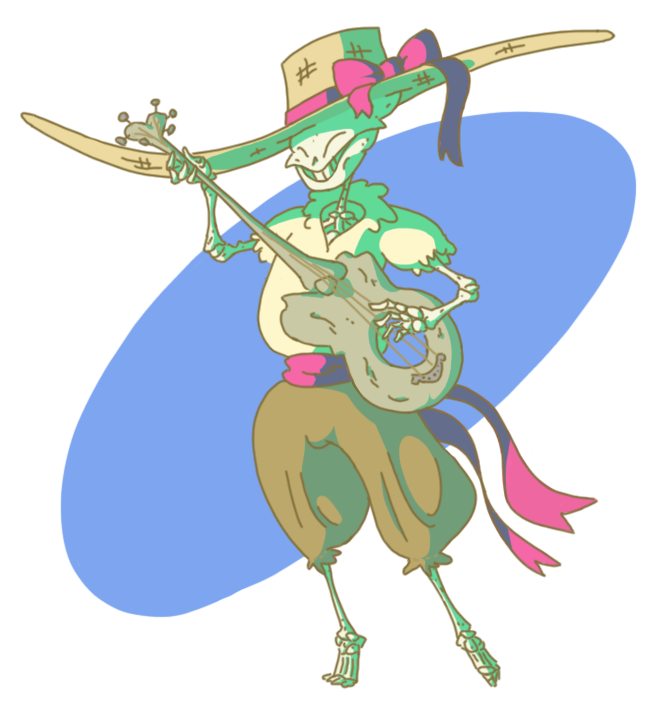
	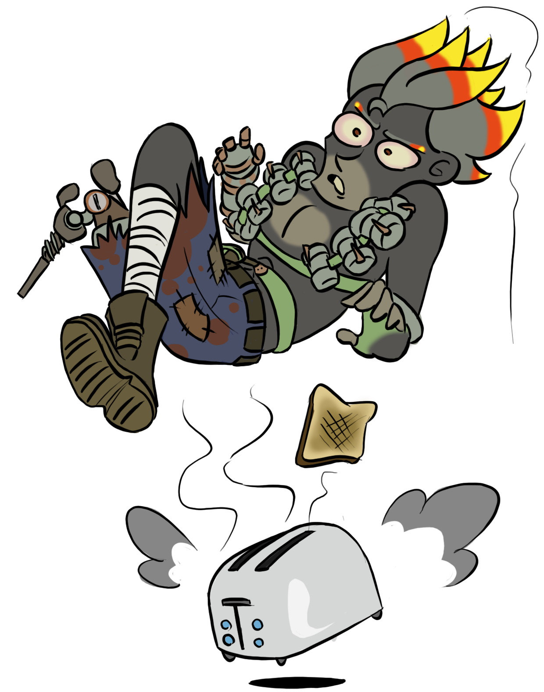
	
	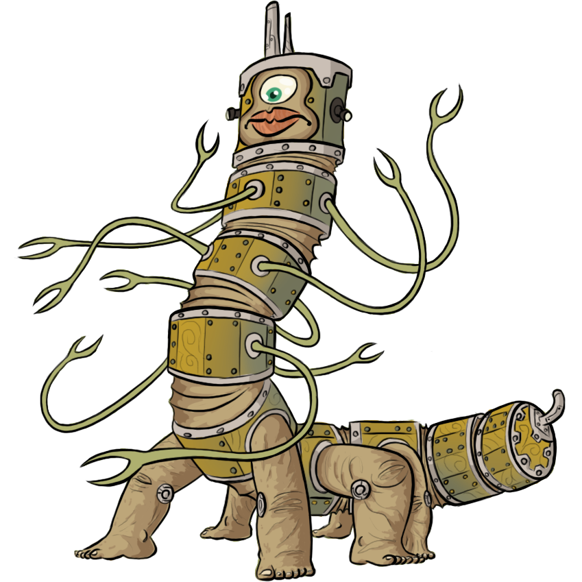
	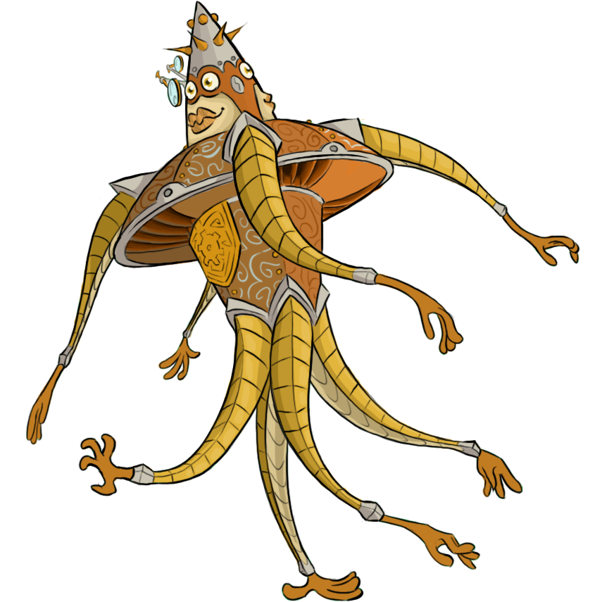
	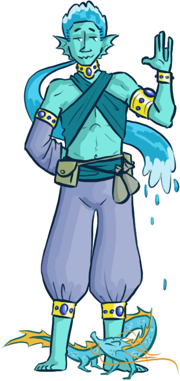
	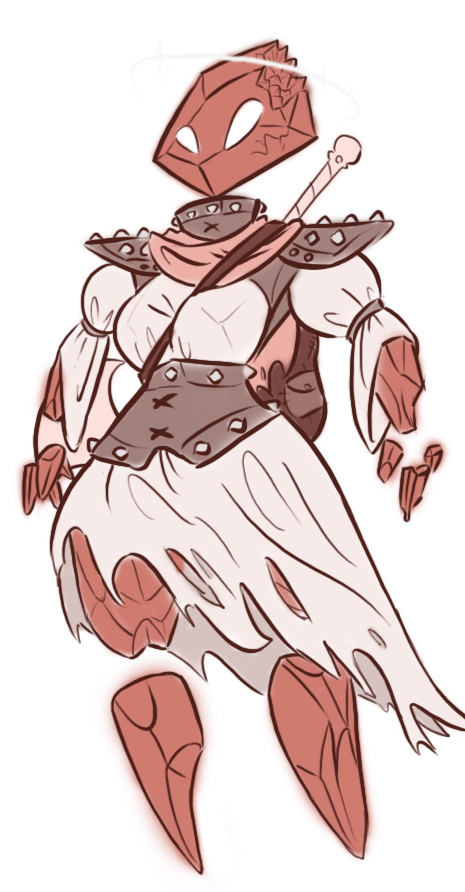
	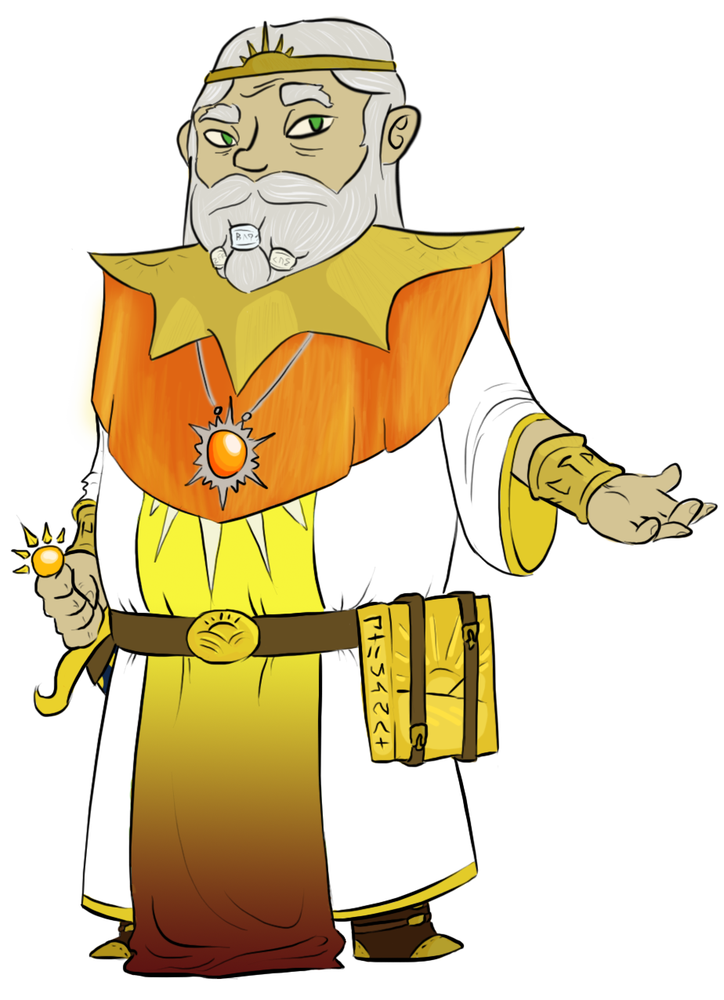
	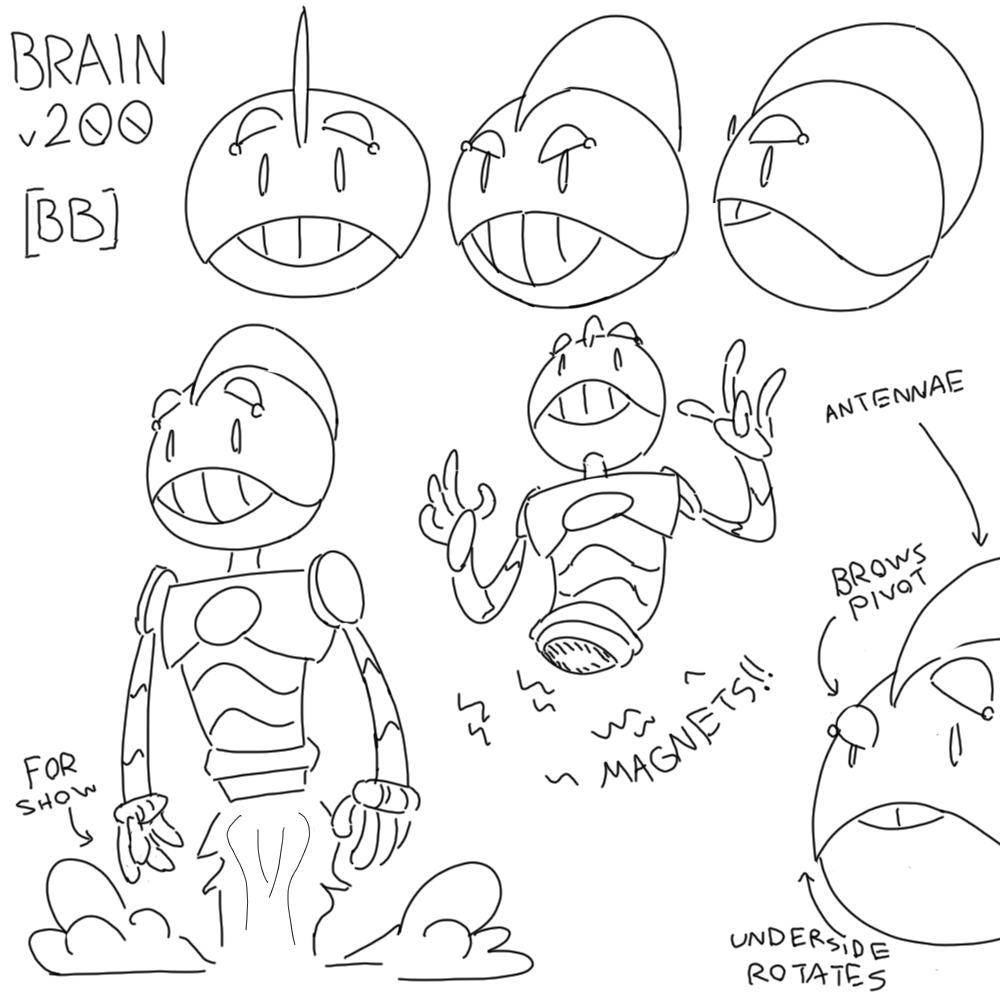
	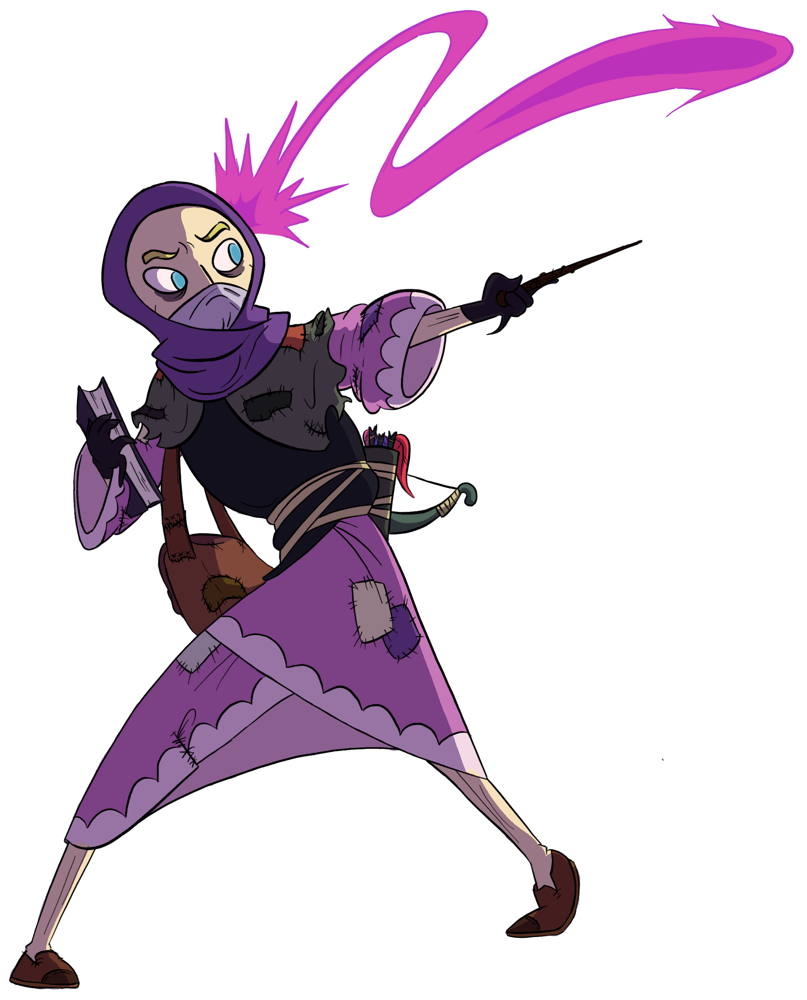
	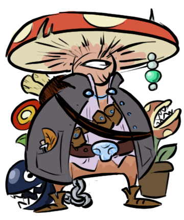
	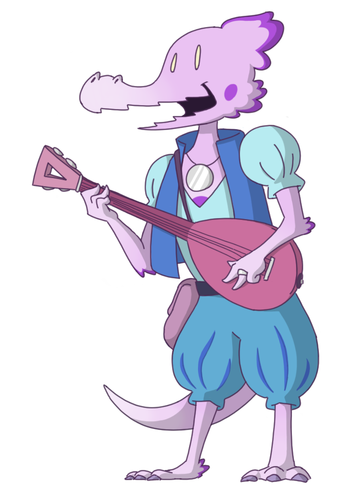
	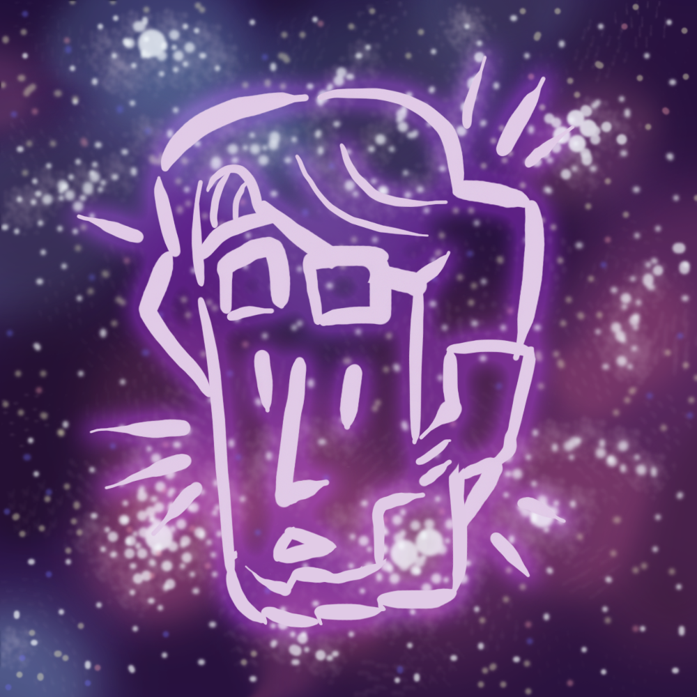
</body>
</html>
